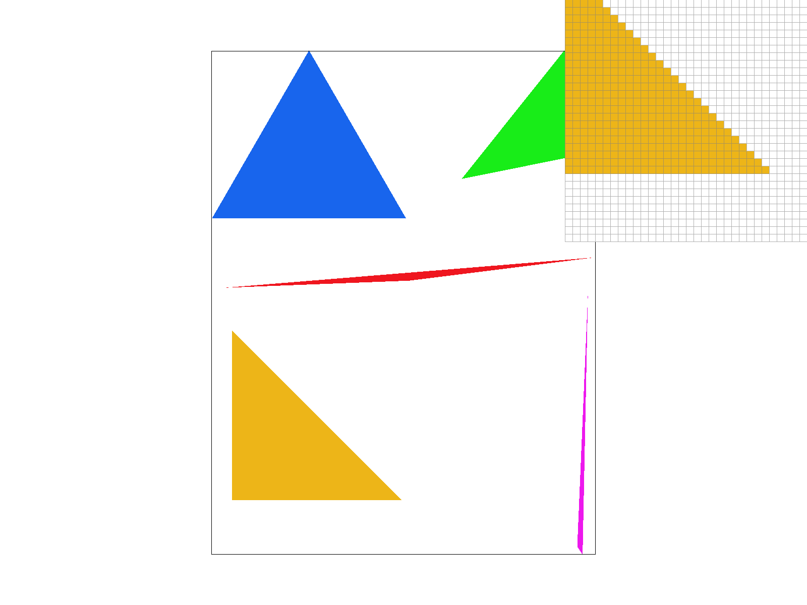
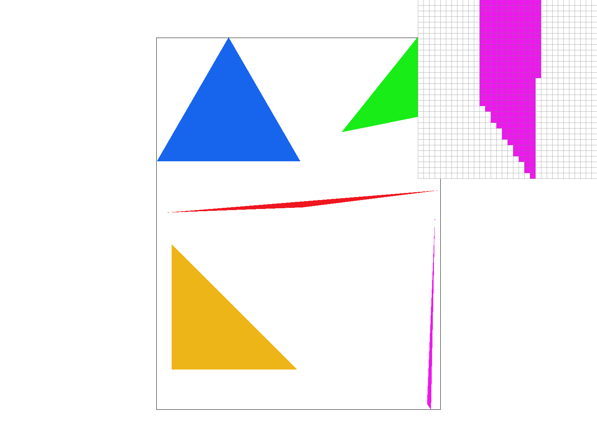
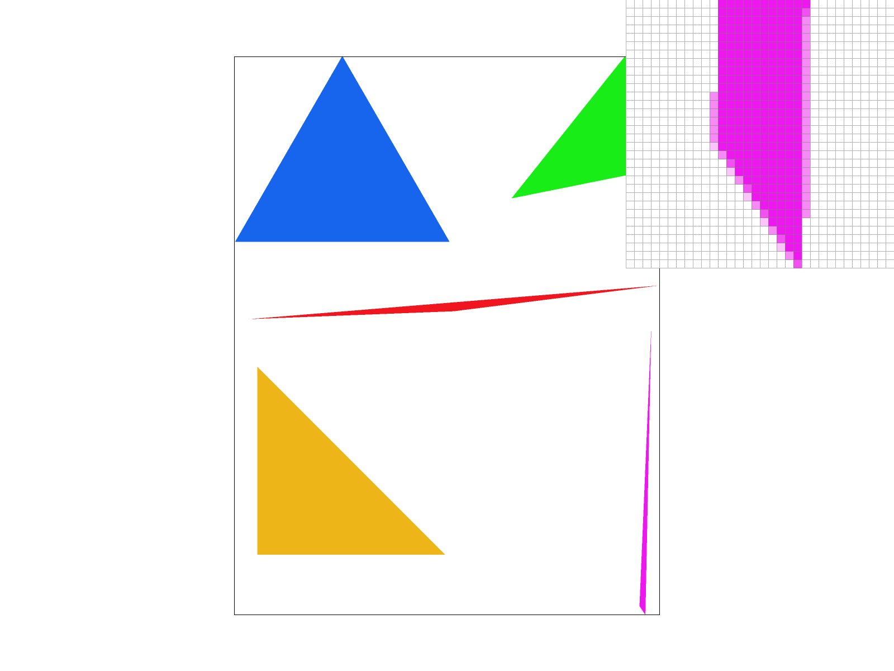
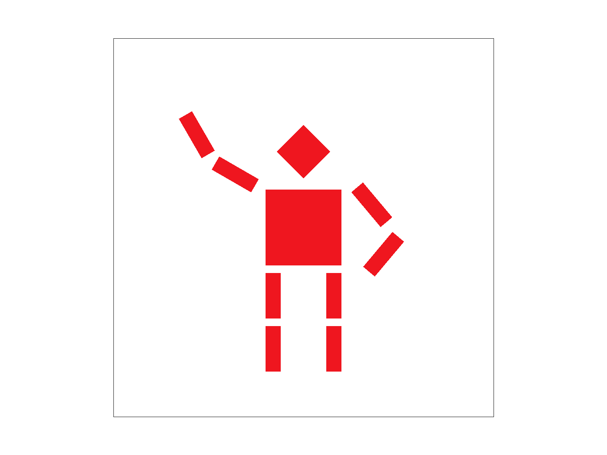
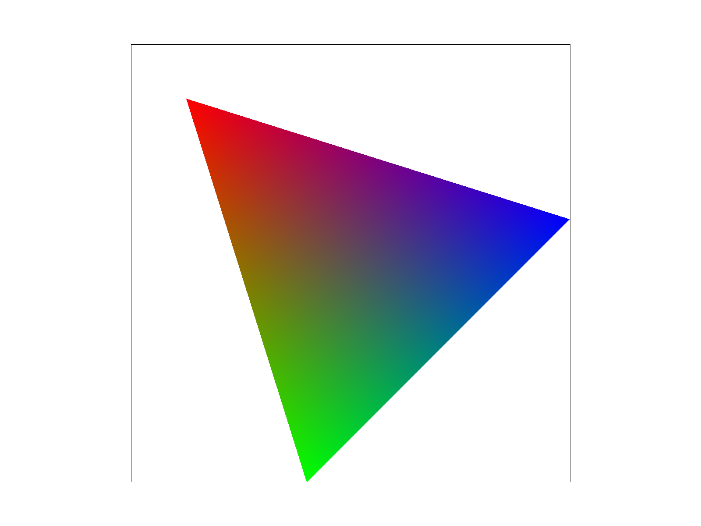
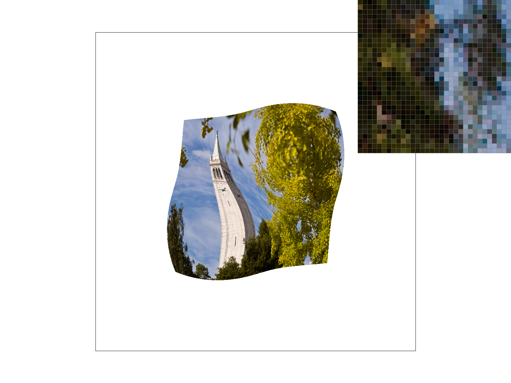
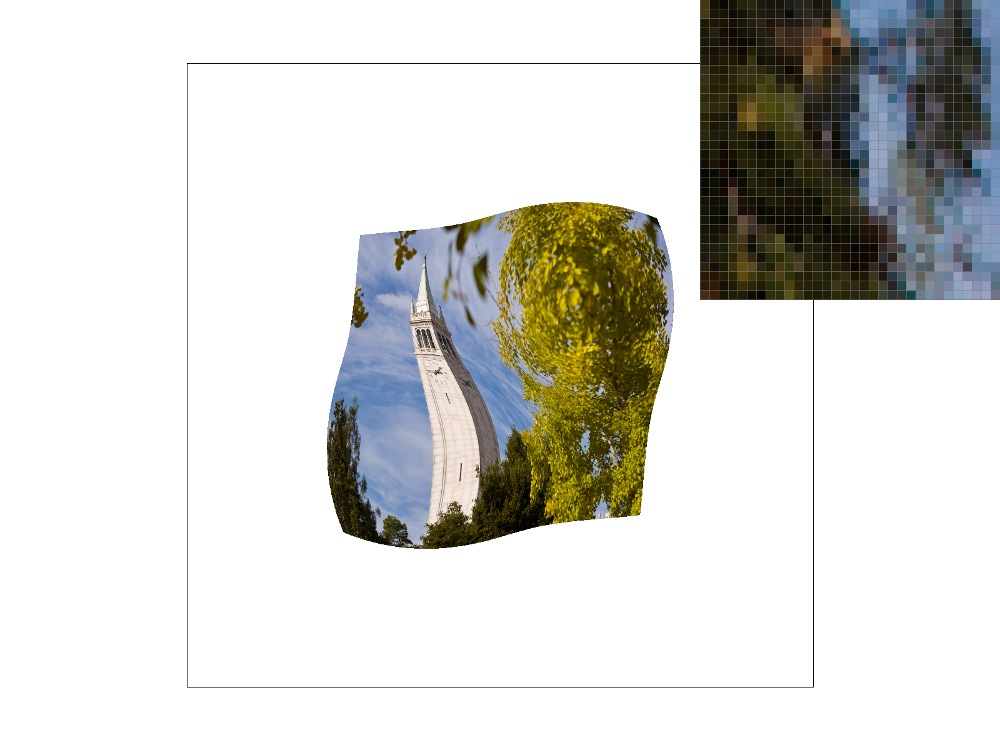
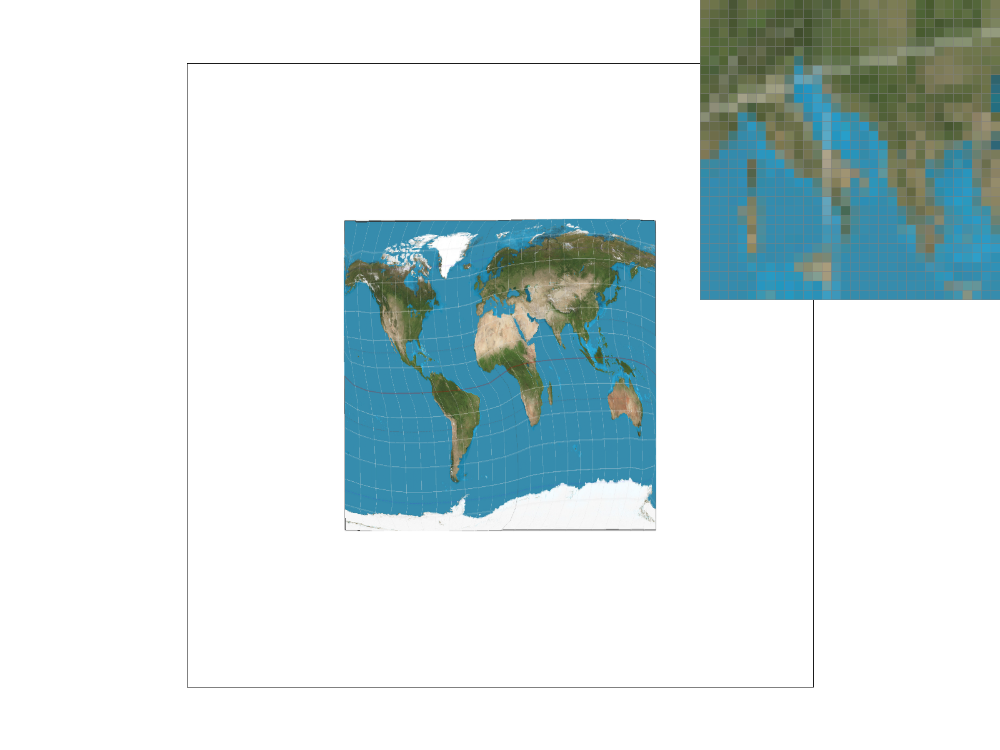
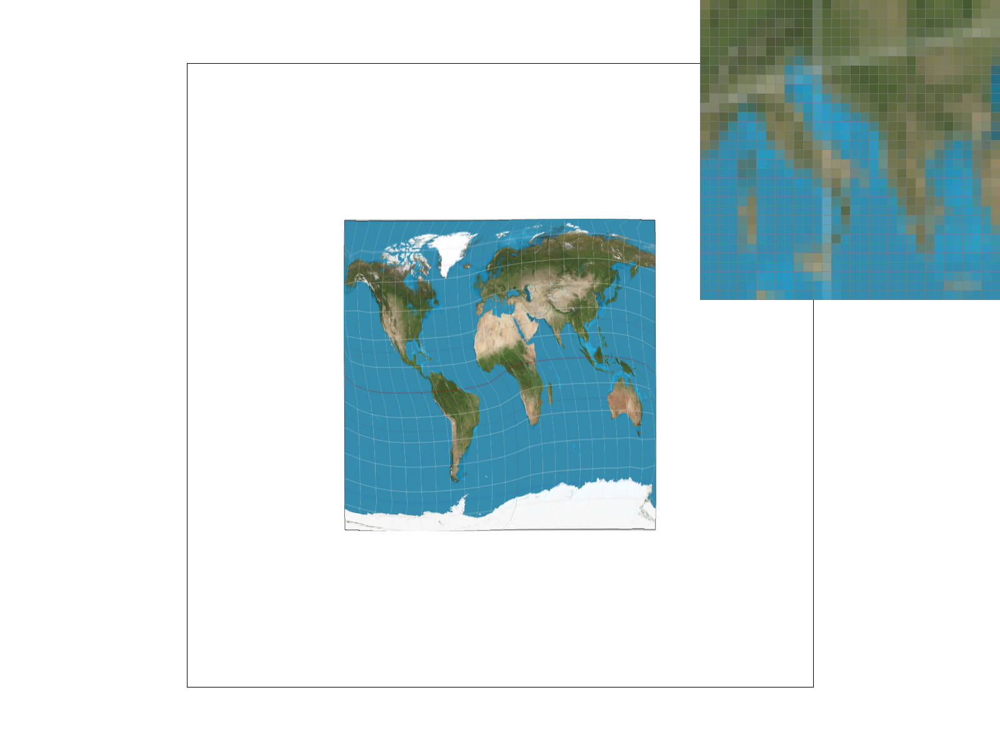

Overview
We've built a rasterizer that renders svg images. It's a functional program that creates and refines images following the rasterization pipeline. Starting from rasterizing single-colored images with triangle meshes and antialiasing with supersampling, we use barycentric interpolation for coloring, nearest-pixel and bilinear methods for texture filtering, and level sampling with mipmaps for texture mapping. This is very different from a typical project, as while the effects of our implemention can be directly visualized, the testings of outcomes cannot be quantified but only observed, which makes it extremenly hard to debug given our limited knowledge and intuition on graphics. Aside from that, this has been a very satisfying process overall. The trilinear filtering makes us feel powerful.
Section I: Rasterization
Part 1: Rasterizing single-color triangles
Given the vertices of an triangle, we find a bounding box of the triangle by finding mins and maxs of x and y. Within this bounding box, we put every sample pixel into the Point-in-Triangle Test (as discussed in the lecture). If passes, clockwise or counter-clockwise, we fill the pixel with the color provided. This is a standard and yet naive method that checks each sample within the bounding box of the triangle. Inspired by the rasterization of line, we used a list {minx, miny} as the starting point and loop through every pixels within the range below maxx and maxy. Also, we makes sure each sample point is on the center with an integer point plus (.5,.5).|

|
Part 2: Antialiasing triangles
Similar to Part 1, we again checks each sample within the bounding box of the triangle. However, given an
integer of sample rate, which is the number of samples needed for each pixel, we use 2 additional layers of loops
to fill the supersampled pixels. Treating each pixel as a square, each row will have
sqrt(sample_rate) samples and a total of sqrt(sample_rate) columns, so
the length of each subregion should have a side length of 1 / sqrt(sample_rate).
We add 0.5*(1/sqrt(sample_rate)) since each sample point should still be on the center.
For data structures, we did not use Vector2D because it takes memory. However, we did save the supersamples in a sample buffer vector.
Next we downsample the previous result by looping through the sample_buffer,
adding up every subsamples color in the same pixel and dividing it by the sample rate to find the average color.
Since the sample rate is unsigned, we multiply r, g, b separatly for the framebuffer target.
Supersampling is useful becasue it rasterizes an image in a higher resolution.
For each pixel in supersampling, we essentially sample multiple locations
within each pixel, and it will sample in a higher frequency, which clearly works for antialiasing.
This is the antialiasing part in rasterization pipeline process.
|

|

|
|
|
|
From the Fig 2-1 to 2-4, we can clearly see that the Jaggies are not as obvious due to the blurring effect of the supersampling. This is because with low sampling rate, the sampling frequency is low in a high frequency picture. By increasing the sampling rate, each pixel contains average of multiple sample, which reduces higher quality images, but costly!
Part 3: Transforms

|

|
Here we simply added another a few rotate transforms at the arms on top of the original robot.svg and adjust the translate position to make the robot waving at you! Took us a while to figure out that we can actually open the svg file in a text editor and add transfrom commands directly.
Section II: Sampling
Part 4: Barycentric coordinates
|

|

|
Given three vertices A, B, and C, barycentric coordinates basically linearly interpolate values at these vertices with weights alpha, beta, and gamma repectively. It generates smoothly varying values depending on the type of the vertices (position, color, texture, etc) because we have alpha + beta + gamma = 1. This fact suggests that if we have a higher weight for A, then the weights of B and C will change accordingly. The weights are calculated based on the distant ratio from the sample point to the vertice and the side formed by other 2 vertices. The figures above show a smooth colored triangle and wheel draw based on barycentric coordinates. Fig 4-1 is a colored triangle with red, green, and blue vertex, clearly these color are strong at each of their vertex and are gradually getting blended in the middle because the weights are designed to make the sample, in this case the color, weighted more when closer to the vertex.
Part 5: "Pixel sampling" for texture mapping
The pixel sampling is used because of the discrepency between the samping rate on the screen space and the texture space. Depending on the texture resolution, the mapping between pixel sampling rate text pixel rate might not always be a 1-1 mapping, and therefore we might have magnification where multiple pixel samples for each texel sample, or minification where each pixel sample with multiple texel samples. To accomandate these problem we use pixel sampling methods such as nearest neighbor and bilinear. Nearest neighbor simply finds the closest texel and uses it as the representation of the entire pixel. It's a easy method but it ignore the details about the other surrounding pixels, and therefore will likely create drastical changing pattern. Bilinear sampling, on the other hand, first checks 4 texels around the sample point and do uses lerp function to do linear interpolation over the horizontal axis, lower and upper, then over the vertical axis. This created a weighted color value that includes the pattern of the surrounding pixels, which will produce a smoother outcome. For nearest sampling, we simply use (width - 1) and (height - 1) to rescale the u and v of the nearest point with a given certain mipmap level. For the bilinear sampling, we use floor and ceil combinations to find the square vertices that encloses the sample pixel, get these pixels according to a given mipmap level, and do 2 horizontal lerp and 1 vertical lerp to find the overall weighted color. These colors are used later for filling the pixels.
|

|
|
|

|
|
Looking at the figures above, we can tell that bilinear sampling clearly defeats nearest sampling when the imaging pattern change quickly. In Fig 5-1, each pixel seems more discrete comparing to the pixel in 5-3, and there are more pixels with strong colors as well. 5-3 is more blended and smooth because bilinear collects information about the surrounding pixels as well. Again with the idea in supersampling, 5-2 and 5-4 are more blurred and they look similar for both methods.
Part 6: "Level sampling" with mipmaps for texture mapping
Level sampling with mipmaps is use for minification of the texture. As previously discussed, because minification is where each pixel sample maps to multiple texel samples in the texture space. Depending on the frequency of the texel samples, there might be aliasing caused at different levels. With a higher level, the pixel will look more blurred. The process is to filter out the high frequencies and then sample them in lower frequencies over and over again. With this mipmapping technique, essentially we can do antialiasing for the high frequency part, but it might also cause some overbluring problem. We first get the level of mipmap D by computing the max between the square root of dudx*dudx + dvdx*dvdx and dudy*dudy + dvdy*dvdy, where p_uv collects barycentric interpolated color of u and v from x and y, p_dx_uv contains that from x+1 and y, and p_dy_uv with x and y+1. Then we take the log2 to calculate the level D and use it for the level sampling. With level sampling implemented, we did some test on the combination of different pixel sampling, level sampling, and supersampling rate. Outcomes with more aliasing are likely to be produced more speedy and with a lower memory usage. Bilinear pixel sampling is pretty useful overall because the result looks good, and it is not as costly as supersampling, and we dont have to collect x+1 and y+1 information for level calculating as well.
|
|
|
|

|

|
|
|
|
Above are some combinations we tested. 6-1 is the default method with almost no antialiasing work done. It is fast but there are lots of jaggies on the boundary with strong color popping up everywhere. With a nearest level sampling in 6-2, the image looks better but still like blurred jaggies. In 6-3 and 6-4 where we use bilinear level, the images look better with smooth coloring transection and nature boundary, especially 6-4 when we use bilinear pixel sampling instead of nearest. 6-5 is the best one but it takes very long to render with supersampling rate 16, it also looks very blurred as well. 6-6 is to show the comparsion between 6-5 with mipmap level 0 instead of bilinear, we can tell that places such as the blue sea looks okay but jagges and other aliasing show up when the color change quickly.
Section III: Art Competition
If you are not participating in the optional art competition, don't worry about this section!